| 슬롯 (§2) | CSS 변수 | Mode A · 틀 1 (pink) | Mode B · 틀 2 (sky) | 비고 |
|---|---|---|---|---|
| face | --wf-face | #F5A3BB | #ACB8F8 | 면색. 짝 --wf-face-top(윗빛) A #FFE7FF / B #DCE2FF |
| alpha | --wf-a-in | 0.7319 | 부품별 — hud/wing/chip 0.000 · capsule 0.544 · slot 0.929 · charsel 0.4822 | 속 비침. 테마축이 아니라 부품축. 짝 --wf-in-a(속 유백 A 0.060) · --wf-a-rim(띠 A 1.000) |
| rim | --wf-rim-c | #FBD1DB | #E4EAFF | 측면 림 색. 폭은 전역 --wf-rim-in 0.00315·ref-w · 세기 --wf-milk-a 는 부품별 |
| outline | --wf-L3-line | #955579 | #6F6BB4 | 겉선 색. 폭 0.00400·ref-w · α 0.700 · 번짐 L3-w×0.28 (전역) |
| gloss | --wf-gl-a | 0.770 | 0.770 | 상단 광택 알파 — 테마축 아님. 광점 좌표만 부품별(기본 9.2%/5.5% 8.7×5.2% rot −21°) |
| contact | --wf-gnd-a · --wf-L2d | 0.324 · L2d=1 (접지 있음) | L2d=0 (접지 없음) | .wf-wrap drop-shadow(0 0.01125·w 0.02250·w rgba(24,12,28,gnd-a×L2d)). 모달 계열만 접지 생존 |
| 층 | 담는 것 | 이 원형의 값 |
|---|---|---|
| 1 Shape | 실루엣 경로 · 코너 · 홈 · 마스크 | 접선 사각형 shape() · 코너 R=0.070·w(초타원 n=3) · 변 볼록 bx 0.016·w / by 0.00906·h · 세로비 --wf-h = 1.1400·w |
| 2 Fill | 면색 · 그라데 · 비침 α | --wf-face A #F5A3BB / B #ACB8F8 · 윗빛 --wf-face-top A #FFE7FF / B #DCE2FF · 속 비침 --wf-a-in .7319 · 속 유백 --wf-in-a .060 |
| 3 Stroke | 겉선 색 · 굵기(절대 px) · 안쪽 림 | 겉선 --wf-L3-line A #955579 / B #6F6BB4 · 폭 0.00400·ref-w · α .700 · 번짐 L3-w×0.28 · 안쪽 림 --wf-rim-in 0.00315·ref-w |
| 4 Effect | 광점 · 림 · 접지 · 블러 | L20 유백 워시 · L2a 측면 림 3겹(--wf-milk-a .7882) · L2b 광점 2 (9.2%/5.5% 8.7×5.2% rot −21°, 19.3%/3.9%) · L2d 접지 ON --wf-gnd-a .324 |
| 5 Slot | 글자 · 숫자 · 아이콘 · 그림 자리 (절대 굽지 않음) | .work-frame__body(padding --wf-safe) · __slots > [data-slot] — 굽지 않음 |
| 층 | 틀 1 (모달) | 틀 2 (모달 밖) |
|---|---|---|
| L0 실루엣 | 판 폭 W · 세로비 1.140 · 큰 완만 코너 | 동일 규격, 세로비 부품별 |
| L1 색 | 면 #FCE6F0(핑크) | 면 #ACB8F8(sky) / 부품 공유 |
| L1.5 비침 α | 가운데 0.315 | 0.14~0.49 부품별 |
| L2 유백·림·광·접지 | 림 #FFF3FF α.63~.73 · 좌상 광 2점 · 아래 접지 13px | 림 폭 소형 영역 B |
| L3 겉선(A/B) | #8E7B89~#97808A · 좌우25 아래46 위60px | 소형: 겉선 얇게 |
| L4 값 자리 | --wf-face/-a-in/-rim-w/-rim-c/-rim-a | --wf-* 틀2 세트 독립 |
| 변주 | 바꾼 것 (면·α·림·겉선·크기) | 상태 |
|---|---|---|
| 모달 15창 판 (틀1) | 기준 — jelly-box.webp 9슬라이스 | 🟢 |
| 캐릭창 하단 정보판 (S11) | 면·α·림 정석, 규격 정보판 | 🟢 |
| 캐릭창 사이드판 | 면 공유 · 크리스탈 코너 추가 | 🟡 |
| HUD 위판/아래판 | 틀2 · 세로비↓ · 겉선 얇게 | 🟢 |
| 지도 하단 젤리 판 | 값만 맞춤 · 배선 미확정 | 🔴 |
| 층 | 담는 것 | 이 원형의 값 |
|---|---|---|
| 1 Shape | 실루엣 경로 · 코너 · 홈 · 마스크 | 스타디움 · R = h×0.500 · 원호 베지에 c1x/c2y .4477 · c1y/c2x 0 · 변 거의 직선(bx .0020·h) · --wf-h = 0.3797·w |
| 2 Fill | 면색 · 그라데 · 비침 α | 테마 face 상속 · 속 비침 --wf-a-in .544 · 속 유백 --wf-in-a .000 |
| 3 Stroke | 겉선 색 · 굵기(절대 px) · 안쪽 림 | 겉선 pink #9B4697 / sky #5E6187 · 색 띠 --wf-band-w 0.027739·ref-w |
| 4 Effect | 광점 · 림 · 접지 · 블러 | 림 --wf-milk-a .5500 · 광점 재배치 gl1 11.13%/20.88% 20×36% · gl2 6.18%/36.26% · L2d 접지 OFF(0) |
| 5 Slot | 글자 · 숫자 · 아이콘 · 그림 자리 (절대 굽지 않음) | 제목 레터링 / 타이머 글리프 자리 — 캡슐에 굽지 않음 |
| 층 | 틀 1 (모달) | 틀 2 (모달 밖) |
|---|---|---|
| L0 실루엣 | 스타디움(양끝 반원) · 높이 고정 | .wf-cap 비율 고정 |
| L1 색 | 면 S11 유백 | sky 변주 |
| L1.5 비침 α | 0.31 근방 | 동일 |
| L2 유백·림·광·접지 | 림 흰 얇게 · 위 광 | 동일 |
| L3 겉선(A/B) | 겉선 얇게 A | 동일 |
| L4 값 자리 | --wf-cq · 캡슐 곡률 | 글자 높이/캡슐 높이 비 |
| 변주 | 바꾼 것 (면·α·림·겉선·크기) | 상태 |
|---|---|---|
| 모달 제목 캡슐 (틀1) | 기준 · 글자 h2::after | 🟢 |
| 캐릭창 제목 캡슐 (틀2-3) | 정석 S11 값 재사용 | 🟢 |
| HUD 타이머 캡슐 (sky) | 면 sky · 숫자 tmr-* 얹음 | 🟢 |
| 층 | 담는 것 | 이 원형의 값 |
|---|---|---|
| 1 Shape | 실루엣 경로 · 코너 · 홈 · 마스크 | 원 · --wf-L0:0(실루엣 층 끔) + clip-path: ellipse(50% 50%) · --wf-h = 1.0085·w |
| 2 Fill | 면색 · 그라데 · 비침 α | --wf-face: transparent(유리) · --wf-a-in .000 |
| 3 Stroke | 겉선 색 · 굵기(절대 px) · 안쪽 림 | 고리 L3·L2a 는 별도 ellipse 오프셋 경로(균일 폭) · 색 띠 --wf-band 60.0% |
| 4 Effect | 광점 · 림 · 접지 · 블러 | 림 --wf-milk-a .9800(가장 강함) · 위 광점 · L2d 접지 OFF · 선택 금테는 상태 변주 |
| 5 Slot | 글자 · 숫자 · 아이콘 · 그림 자리 (절대 굽지 않음) | 초상 / 펫 얼굴 그림 z 위 — 방울에 굽지 않음 |
| 층 | 틀 1 (모달) | 틀 2 (모달 밖) |
|---|---|---|
| L0 실루엣 | 정원 링 · 안쪽 오목 | 동일 |
| L1 색 | 면 유백/투명 유리 | sky |
| L1.5 비침 α | 가운데 낮음(유리) | 동일 |
| L2 유백·림·광·접지 | 바깥 림 + 위 광 + 접지 | 활성 금테 링 |
| L3 겉선(A/B) | 겉선 얇게 B | 동일 |
| L4 값 자리 | --wf-* chip · 링 상태 | 초상 그림 z위 |
| 변주 | 바꾼 것 (면·α·림·겉선·크기) | 상태 |
|---|---|---|
| 캐릭창 초상 방울 (틀2-4) | 기준 · 얼굴 z위 | 🟢 |
| HUD 펫 방울 | 면 sky · 펫 얼굴 | 🟢 |
| HUD 캐릭 방울 | 면 sky · 초상 | 🟢 |
| 클래식 캐릭·펫 방울 | 동일 부품 재사용 | 🟢 |
| 선택 금테 | 외곽 링 활성색 | 🟡 |
| 층 | 담는 것 | 이 원형의 값 |
|---|---|---|
| 1 Shape | 실루엣 경로 · 코너 · 홈 · 마스크 | 정사각 라운드 · --wf-h = 1.0000·w · R = 0.2100·w · 변 볼록 bx/by 0px(반듯) |
| 2 Fill | 면색 · 그라데 · 비침 α | --wf-face #D8C0D4 · 속 비침 --wf-a-in .929(거의 불투명) · --wf-in-a .000 |
| 3 Stroke | 겉선 색 · 굵기(절대 px) · 안쪽 림 | 겉선 #6C4A72 · 색 띠 --wf-band-w 0px(없음) |
| 4 Effect | 광점 · 림 · 접지 · 블러 | 림 --wf-milk-a .3534(약함) · 코너 크리스탈 4 · L2d 접지 OFF |
| 5 Slot | 글자 · 숫자 · 아이콘 · 그림 자리 (절대 굽지 않음) | [data-slot=icon] 중앙 + crystal 4모서리 |
| 층 | 틀 1 (모달) | 틀 2 (모달 밖) |
|---|---|---|
| L0 실루엣 | 사각 라운드 액자 · 속 비움 | 동일 |
| L1 색 | 면 옅은 유백 | 동일 |
| L1.5 비침 α | 속 낮음 | 동일 |
| L2 유백·림·광·접지 | 코너 크리스탈 4 · 안쪽 홈 | 동일 |
| L3 겉선(A/B) | 겉선 B | 동일 |
| L4 값 자리 | [data-part=slot] · 아이콘 중앙 | 이름/추천 알약 변주 |
| 변주 | 바꾼 것 (면·α·림·겉선·크기) | 상태 |
|---|---|---|
| 초상 칩 (kit-slot-v2) | 기준 | 🟡 |
| 이름 알약 | 가로 스타디움 변형 | 🟡 |
| 아이템 슬롯 3 | 코너 크리스탈 · 아이콘 대역 | 🟡 |
| 젬 레일 | 다중 슬롯 나열 | 🟡 |
| 층 | 담는 것 | 이 원형의 값 |
|---|---|---|
| 1 Shape | 실루엣 경로 · 코너 · 홈 · 마스크 | 넓고 낮은 판 · hud --wf-h = 0.1794·w / wing 0.2145·w · --wf-ext(위 변 판 밖) · --wf-step-h/x/r 계단 홈 · L2a·L3 는 자체 shape() 계단 경로 |
| 2 Fill | 면색 · 그라데 · 비침 α | --wf-face #ACB8F8 직접 지정 · 속 비침 --wf-a-in .000(완전 유리) · 띠 --wf-a-rim 1.000 |
| 3 Stroke | 겉선 색 · 굵기(절대 px) · 안쪽 림 | 겉선 #6F6BB4 · wing 색 띠 --wf-band 89.0% |
| 4 Effect | 광점 · 림 · 접지 · 블러 | 림 hud .4000 / wing .4500 · wing 평탄층 --wf-backdrop #E4C4D3 · L2d 접지 OFF |
| 5 Slot | 글자 · 숫자 · 아이콘 · 그림 자리 (절대 굽지 않음) | 에너지 홈 · HP 채움 · 타이머 캡슐 · 방울 자리 — 전부 별도 Frame |
| 층 | 틀 1 (모달) | 틀 2 (모달 밖) |
|---|---|---|
| L0 실루엣 | 넓고 낮은 판 · 계단/홈 | 동일 폭 조정 |
| L1 색 | 면 sky L+5% | 동일 |
| L1.5 비침 α | 낮음(0.10~0.13) | 동일 |
| L2 유백·림·광·접지 | 림 + 위 광 · 홈 그림자 | 에너지 홈 오목 |
| L3 겉선(A/B) | 겉선 얇게 A | 동일 |
| L4 값 자리 | --wf-* hud · 계단 높이 | 날개판 = wing |
| 변주 | 바꾼 것 (면·α·림·겉선·크기) | 상태 |
|---|---|---|
| HUD 위 판 (판1) | 기준 hud-plate-top | 🟢 |
| HUD 아래 판 (판2) | 계단 실루엣 | 🟢 |
| 에너지 홈 좌/우 | 9슬라이스 오목 recolor | 🟡 |
| 지도 젤리 바 | 값만 맞춤 | 🔴 |
| 스탯 트랙 | 가로 얇은 바 | 🟡 |
| 층 | 담는 것 | 이 원형의 값 |
|---|---|---|
| 1 Shape | 실루엣 경로 · 코너 · 홈 · 마스크 | 알약(pill) · 높이 고정 · 코너 = 높이 절반 (work-btn.css, work-frame 밖) |
| 2 Fill | 면색 · 그라데 · 비침 α | 역할색 변주(주·보조·고스트) — Variables 참조 기준 미승인 |
| 3 Stroke | 겉선 색 · 굵기(절대 px) · 안쪽 림 | 겉선 얇게 A · 안쪽 림 |
| 4 Effect | 광점 · 림 · 접지 · 블러 | 위 광택 · 아래 접지 · Pressed 눌림 |
| 5 Slot | 글자 · 숫자 · 아이콘 · 그림 자리 (절대 굽지 않음) | 아이콘 · 글자 · 배지 (고정 슬롯 틀) |
| 층 | 틀 1 (모달) | 틀 2 (모달 밖) |
|---|---|---|
| L0 실루엣 | 라운드 직사각 · 아래 두께(입체) | pill=완전 라운드 |
| L1 색 | 역할색 8 (primary/secondary/ghost) | 동일 |
| L1.5 비침 α | 표면 그라데 | 동일 |
| L2 유백·림·광·접지 | 위 광 · 아래 그림자턱 | 눌림 상태 α |
| L3 겉선(A/B) | 겉선 · 역할 테두리 | 동일 |
| L4 값 자리 | 슬롯: 아이콘·글자·설명·보조·배지 | S10·S4 실측 |
| 변주 | 바꾼 것 (면·α·림·겉선·크기) | 상태 |
|---|---|---|
| primary (기준 버튼) | 미승인 | 🟡 |
| secondary | 면색만 교체 | 🟡 |
| ghost | 면 투명 · 테두리만 | 🟡 |
| pill 토글 | 완전 라운드 상속 | 🟡 |
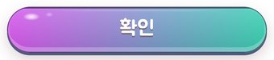
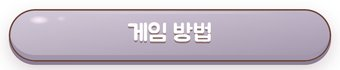
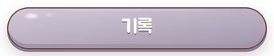
| 층 | 담는 것 | 이 원형의 값 |
|---|---|---|
| 1 Shape | 실루엣 경로 · 코너 · 홈 · 마스크 | 그림 버튼 외곽(발주 캔버스) 내용물 구움 = 규격 위반 |
| 2 Fill | 면색 · 그라데 · 비침 α | 구워짐 (recolor 불가) |
| 3 Stroke | 겉선 색 · 굵기(절대 px) · 안쪽 림 | 구워짐 |
| 4 Effect | 광점 · 림 · 접지 · 블러 | 구워짐 — 광·접지 분리 불가 |
| 5 Slot | 글자 · 숫자 · 아이콘 · 그림 자리 (절대 굽지 않음) | 슬롯 없음 (아이콘·글자가 그림에 구워짐) |
| 층 | 틀 1 (모달) | 틀 2 (모달 밖) |
|---|---|---|
| L0 실루엣 | 판 실루엣(자산) | 동일 |
| L1 색 | 면 손그림 젤리 | 동일 |
| L1.5 비침 α | 불투명 | 동일 |
| L2 유백·림·광·접지 | 손질 광·접지 구움 | 동일 |
| L3 겉선(A/B) | 겉선 구움 | 동일 |
| L4 값 자리 | ★내용물(아이콘·글자·배지) 구움 | = 위반 · 분리 목표 |
| 변주 | 바꾼 것 (면·α·림·겉선·크기) | 상태 |
|---|---|---|
| 모드 행 4 (모험·아케이드·데일리·러시) | 판+아이콘+글자+배지 구움(2~4프레임) | 🟡·위반 |
| 설정줄 sian/sian2-btn | 판+기어+렌치 구움 | 🟡·위반 |
| stage-btn (back/chars/settings/records) | 판+아이콘 구움 | 🟡·위반 |
| 일시정지 duel-btn-pause | 버튼+글리프 구움 | 🟡·위반 |
| 층 | 담는 것 | 이 원형의 값 |
|---|---|---|
| 1 Shape | 실루엣 경로 · 코너 · 홈 · 마스크 | 바 틀(스타디움) + 채움 마스크 + 눈금 (kit-gauge-v2) |
| 2 Fill | 면색 · 그라데 · 비침 α | 채움 그라데 · 트랙 어두운 면 |
| 3 Stroke | 겉선 색 · 굵기(절대 px) · 안쪽 림 | 틀 겉선 · 눈금 선 |
| 4 Effect | 광점 · 림 · 접지 · 블러 | 채움 광택 · 끝단 하이라이트 |
| 5 Slot | 글자 · 숫자 · 아이콘 · 그림 자리 (절대 굽지 않음) | 수치 글자 · 뼈/날개 장식 = 별도 Frame |
| 층 | 틀 1 (모달) | 틀 2 (모달 밖) |
|---|---|---|
| L0 실루엣 | 가로 트랙 · 라운드 끝 | 동일 |
| L1 색 | 트랙 어둠 + 채움 역할색 | 동일 |
| L1.5 비침 α | 트랙 반투명 | 동일 |
| L2 유백·림·광·접지 | 안쪽 그림자 · 채움 위 광 | 동일 |
| L3 겉선(A/B) | 겉선 얇게 | 동일 |
| L4 값 자리 | --v 채움비 · 눈금 셀 수 | HP=7셀 |
| 변주 | 바꾼 것 (면·α·림·겉선·크기) | 상태 |
|---|---|---|
| HP 게이지 (7셀) | villain/char 색 · 눈금 코드 | 🟡 |
| 스탯 게이지 | 단색 채움 · 4-stack | 🟡 |
| 에너지 홈 채움 | hud-groove 위 채움 | 🟡 |
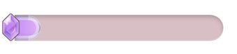
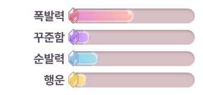
| 층 | 담는 것 | 이 원형의 값 |
|---|---|---|
| 1 Shape | 실루엣 경로 · 코너 · 홈 · 마스크 | 어깨 달린 계단 판 · --wf-has-tab:1 · --wf-Rt = 0.02400·w·L0 · --wf-h = 0.4952·w · 탭 줄자 --wf-tab-h/r/f/fs/padL/padR/gap |
| 2 Fill | 면색 · 그라데 · 비침 α | 속 비침 --wf-a-in .4822 · 비활성 탭 --wf-tab-off-c #A8788E α .350 |
| 3 Stroke | 겉선 색 · 굵기(절대 px) · 안쪽 림 | 겉선 #AB93A5 |
| 4 Effect | 광점 · 림 · 접지 · 블러 | 림 --wf-milk-a .9800 · 평탄층 --wf-backdrop #E3E7D7 |
| 5 Slot | 글자 · 숫자 · 아이콘 · 그림 자리 (절대 굽지 않음) | .work-tab[data-active] 글자 · 탭 내용 판 |
| 층 | 틀 1 (모달) | 틀 2 (모달 밖) |
|---|---|---|
| L0 실루엣 | 어깨 달린 판 · 위 걸침 | 세로탭=측면 |
| L1 색 | 면 유백/어둠(비활성) | 동일 |
| L1.5 비침 α | 활성 밝음 | 동일 |
| L2 유백·림·광·접지 | 위 광 · 접합 그림자 | 동일 |
| L3 겉선(A/B) | 겉선 | 동일 |
| L4 값 자리 | 활성/비활성 상태 · 라벨 자리 | 이름/Lv 탭 |
| 변주 | 바꾼 것 (면·α·림·겉선·크기) | 상태 |
|---|---|---|
| 캐릭터 탭 / 펫 탭 | 활성 전환 | 🟡 |
| 세로 탭 3 | 측면 배치 | 🟡 |
| 이름/Lv 탭 (HUD) | 어두운 판 · HP 라벨 | 🟡 |
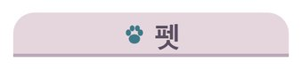
| 층 | 담는 것 | 이 원형의 값 |
|---|---|---|
| 1 Shape | 실루엣 경로 · 코너 · 홈 · 마스크 | 원 + X 글리프 (sian3-close) |
| 2 Fill | 면색 · 그라데 · 비침 α | 구워짐 |
| 3 Stroke | 겉선 색 · 굵기(절대 px) · 안쪽 림 | 구워짐 |
| 4 Effect | 광점 · 림 · 접지 · 블러 | 구워짐 |
| 5 Slot | 글자 · 숫자 · 아이콘 · 그림 자리 (절대 굽지 않음) | 없음 (글리프 포함) |
| 층 | 틀 1 (모달) | 틀 2 (모달 밖) |
|---|---|---|
| L0 실루엣 | 원형/라운드 X 실루엣 | 동일 |
| L1 색 | 무지개/젤리 면 | 동일 |
| L1.5 비침 α | 불투명 | 동일 |
| L2 유백·림·광·접지 | 광·접지 구움 | 동일 |
| L3 겉선(A/B) | 겉선 구움 | 동일 |
| L4 값 자리 | 무접촉 유지 |
| 변주 | 바꾼 것 (면·α·림·겉선·크기) | 상태 |
|---|---|---|
| sian3-close (무지개) | 기준 · 11자리 | 🟡 |
| ui-x-jelly | 젤리 변형 | 🟡 |
| 층 | 담는 것 | 이 원형의 값 |
|---|---|---|
| 1 Shape | 실루엣 경로 · 코너 · 홈 · 마스크 | 리본 · 원형 메달 · 알약 글자 구움 = 위반 |
| 2 Fill | 면색 · 그라데 · 비침 α | 구워짐 |
| 3 Stroke | 겉선 색 · 굵기(절대 px) · 안쪽 림 | 구워짐 |
| 4 Effect | 광점 · 림 · 접지 · 블러 | 구워짐 |
| 5 Slot | 글자 · 숫자 · 아이콘 · 그림 자리 (절대 굽지 않음) | 레터링 분리 목표 — 현재 슬롯 없음 |
| 층 | 틀 1 (모달) | 틀 2 (모달 밖) |
|---|---|---|
| L0 실루엣 | 작은 판/별/육각 실루엣 | 동일 |
| L1 색 | 역할색 면 | 동일 |
| L1.5 비침 α | 불투명 | 동일 |
| L2 유백·림·광·접지 | 광·접지 | 돔 캡슐(메달) |
| L3 겉선(A/B) | 겉선 | 동일 |
| L4 값 자리 | ★글자·등급·엠블럼 구움 | = 위반 · 레터링 분리 목표 |
| 변주 | 바꾼 것 (면·α·림·겉선·크기) | 상태 |
|---|---|---|
| lib-badge a/b/c/s | 별 배지 + 등급글자 구움 | 🟡·위반 |
| 메달 4종 (attack/awaken/pet/special) | 캡슐+엠블럼+라벨 구움 | 🟡·위반 |
| NEW / 「1단」 | 글자 구움 | 🟡·위반 |
| 추천 알약 (kit-pill-v2) | 코드 알약 | 🟡 |
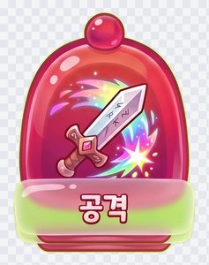
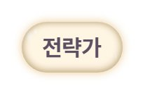
| 층 | 담는 것 | 이 원형의 값 |
|---|---|---|
| 1 Shape | 실루엣 경로 · 코너 · 홈 · 마스크 | 발주 캔버스 정사각 · 여백 규격 1 |
| 2 Fill | 면색 · 그라데 · 비침 α | 팔레트 고정(발주 규격) |
| 3 Stroke | 겉선 색 · 굵기(절대 px) · 안쪽 림 | 아웃라인 발주 규격 |
| 4 Effect | 광점 · 림 · 접지 · 블러 | 자체 광 없음(T5 는 틀이 얹음) |
| 5 Slot | 글자 · 숫자 · 아이콘 · 그림 자리 (절대 굽지 않음) | 없음 (T3 슬롯에 들어가는 내용물) |
| 층 | 틀 1 (모달) | 틀 2 (모달 밖) |
|---|---|---|
| L0 실루엣 | 단일 아이콘 실루엣 | 동일 |
| L1 색 | 면 손그림 | 동일 |
| L1.5 비침 α | 불투명 | 동일 |
| L2 유백·림·광·접지 | 손질 광 | 동일 |
| L3 겉선(A/B) | 겉선 | 동일 |
| L4 값 자리 | 투명 webp · 상자 메타(slot-ic-*/ic-*) | 글자 금지 |
| 변주 | 바꾼 것 (면·α·림·겉선·크기) | 상태 |
|---|---|---|
| slot-ic-* (gem/item/skill/skin/star…) | 젬 액자용 아이콘 | 🟡 |
| lib-glyph-* (heart/gear…16종) | 글리프 | 🟡 |
| mode-ico / stage-icon / duel-icon | 모드·잠금·성 | 🟡 |
| tmr-0~9 · tmr-colon | 숫자 글자(내용물) | 🟡 |
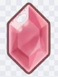
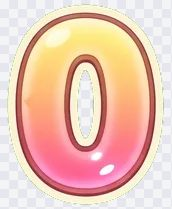
| 층 | 담는 것 | 이 원형의 값 |
|---|---|---|
| 1 Shape | 실루엣 경로 · 코너 · 홈 · 마스크 | 제목 글자 그림 · 자리 20 중 10 |
| 2 Fill | 면색 · 그라데 · 비침 α | 구워짐 |
| 3 Stroke | 겉선 색 · 굵기(절대 px) · 안쪽 림 | 구워짐 |
| 4 Effect | 광점 · 림 · 접지 · 블러 | 구워짐 |
| 5 Slot | 글자 · 숫자 · 아이콘 · 그림 자리 (절대 굽지 않음) | 없음 — 캡슐 슬롯에 들어감 |
| 층 | 틀 1 (모달) | 틀 2 (모달 밖) |
|---|---|---|
| L0 실루엣 | 글자 실루엣(내용물 프레임) | 동일 |
| L1 색 | 면 색 채움 | 동일 |
| L1.5 비침 α | 불투명 | 동일 |
| L2 유백·림·광·접지 | 외곽·그림자 구움 | 동일 |
| L3 겉선(A/B) | 테두리 구움 | 동일 |
| L4 값 자리 | ttl- | 자리 20 전부 목표 |
| 변주 | 바꾼 것 (면·α·림·겉선·크기) | 상태 |
|---|---|---|
| ttl-play/clear/howto/settings… | 한/영 쌍 | 🟡 |
| arc/gallery/unlock 계열 | 미사용 | 🟡 |
| 층 | 담는 것 | 이 원형의 값 |
|---|---|---|
| 1 Shape | 실루엣 경로 · 코너 · 홈 · 마스크 | 글자 박스(work-lettering.css) |
| 2 Fill | 면색 · 그라데 · 비침 α | 글자색 · 그라데 Variables |
| 3 Stroke | 겉선 색 · 굵기(절대 px) · 안쪽 림 | 테두리 글자(stroke) · 그림자 |
| 4 Effect | 광점 · 림 · 접지 · 블러 | 위 광 · 아래 접지 · 기울임 |
| 5 Slot | 글자 · 숫자 · 아이콘 · 그림 자리 (절대 굽지 않음) | 텍스트 노드 — 굽지 않음 |
| 층 | 틀 1 (모달) | 틀 2 (모달 밖) |
|---|---|---|
| L0 실루엣 | 글자 자체 형태 | 동일 |
| L1 색 | 면·그라데 색 | 동일 |
| L1.5 비침 α | 불투명 | 동일 |
| L2 유백·림·광·접지 | 겉선·그림자 CSS | 동일 |
| L3 겉선(A/B) | 스트로크 | 동일 |
| L4 값 자리 | 동적 제목 전용 · work-lettering 토큰 | 숫자/등급 재사용 |
| 변주 | 바꾼 것 (면·α·림·겉선·크기) | 상태 |
|---|---|---|
| 동적 모달 제목 | 런타임 텍스트 | 🟡 |
| 등급/숫자 레터링 | 메달·배지 글자 분리 대상 | 🟡 |
| 층 | 담는 것 | 이 원형의 값 |
|---|---|---|
| 1 Shape | 실루엣 경로 · 코너 · 홈 · 마스크 | 텍스트 박스(라벨·본문·숫자) |
| 2 Fill | 면색 · 그라데 · 비침 α | 역할별 글자색 |
| 3 Stroke | 겉선 색 · 굵기(절대 px) · 안쪽 림 | 없음 |
| 4 Effect | 광점 · 림 · 접지 · 블러 | 없음 |
| 5 Slot | 글자 · 숫자 · 아이콘 · 그림 자리 (절대 굽지 않음) | 텍스트 노드 |
| 층 | 틀 1 (모달) | 틀 2 (모달 밖) |
|---|---|---|
| L0 실루엣 | 글자 | 동일 |
| L1 색 | 서체 역할색 | 동일 |
| L1.5 비침 α | 불투명 | 동일 |
| L2 유백·림·광·접지 | 없음 | 없음 |
| L3 겉선(A/B) | 없음 | 없음 |
| L4 값 자리 | 서체 역할표(제목/라벨/본문/숫자) | 페이지 점·조건줄 CSS |
| 변주 | 바꾼 것 (면·α·림·겉선·크기) | 상태 |
|---|---|---|
| 라벨 | 버튼·칩 라벨 | 🟡 |
| 본문 | 규칙 카드 본문 | 🟡 |
| 숫자 | 타이머·점수 | 🟡 |
| 페이지 점 / 별 조건줄 | CSS 내용물 | 🟡 |
| 층 | 담는 것 | 이 원형의 값 |
|---|---|---|
| 1 Shape | 실루엣 경로 · 코너 · 홈 · 마스크 | 알약 + 노브 원(버튼 pill 상속) |
| 2 Fill | 면색 · 그라데 · 비침 α | On/Off 역할색 |
| 3 Stroke | 겉선 색 · 굵기(절대 px) · 안쪽 림 | 버튼 겉선 상속 |
| 4 Effect | 광점 · 림 · 접지 · 블러 | 노브 접지 · 전환 이징 |
| 5 Slot | 글자 · 숫자 · 아이콘 · 그림 자리 (절대 굽지 않음) | 라벨 글자 |
| 층 | 틀 1 (모달) | 틀 2 (모달 밖) |
|---|---|---|
| L0 실루엣 | 완전 라운드 트랙 + 노브 | 동일 |
| L1 색 | On=역할색 / Off=회색 | 동일 |
| L1.5 비침 α | 불투명 | 동일 |
| L2 유백·림·광·접지 | 안쪽 그림자 · 노브 광 | 동일 |
| L3 겉선(A/B) | 겉선 | 동일 |
| L4 값 자리 | 상태 On/Off · 노브 위치 | 버튼 pill 변주 상속 |
| 변주 | 바꾼 것 (면·α·림·겉선·크기) | 상태 |
|---|---|---|
| 설정 토글 On/Off | 버튼 pill 변주 | 🟡 |
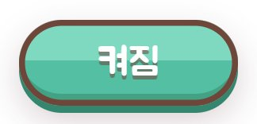
| 층 | 담는 것 | 이 원형의 값 |
|---|---|---|
| 1 Shape | 실루엣 경로 · 코너 · 홈 · 마스크 | 화면 전면 사각 + 판 뒤 평탄층(L0 clip 안) |
| 2 Fill | 면색 · 그라데 · 비침 α | --wf-backdrop modal #998CA5 · wing #E4C4D3 · charsel #E3E7D7 · 기본 transparent |
| 3 Stroke | 겉선 색 · 굵기(절대 px) · 안쪽 림 | 없음 |
| 4 Effect | 광점 · 림 · 접지 · 블러 | 뒤 블러(C안) · 어둡게 |
| 5 Slot | 글자 · 숫자 · 아이콘 · 그림 자리 (절대 굽지 않음) | 없음 |
| 층 | 틀 1 (모달) | 틀 2 (모달 밖) |
|---|---|---|
| L0 실루엣 | 전면 사각 | 동일 |
| L1 색 | 검정 | 동일 |
| L1.5 비침 α | α 0.4~0.6 | 동일 |
| L2 유백·림·광·접지 | 블러(backdrop) | 동일 |
| L3 겉선(A/B) | 없음 | 없음 |
| L4 값 자리 | --wf-backdrop | 평탄층 뒤 배경 눌림 |
| 변주 | 바꾼 것 (면·α·림·겉선·크기) | 상태 |
|---|---|---|
| 모달 스크림 | 창 뒤 어둠+블러 | 🟡 |
| 평탄층 | 배경 채도 눌림 | 🟡 |
| 층 | 담는 것 | 이 원형의 값 |
|---|---|---|
| 1 Shape | 실루엣 경로 · 코너 · 홈 · 마스크 | 무대 배경(T1) · 초상/전신(T4) · 장식 |
| 2 Fill | 면색 · 그라데 · 비침 α | 구워짐 |
| 3 Stroke | 겉선 색 · 굵기(절대 px) · 안쪽 림 | 구워짐 |
| 4 Effect | 광점 · 림 · 접지 · 블러 | 구워짐 |
| 5 Slot | 글자 · 숫자 · 아이콘 · 그림 자리 (절대 굽지 않음) | 없음 |
| 층 | 틀 1 (모달) | 틀 2 (모달 밖) |
|---|---|---|
| L0 실루엣 | 장면/캐릭터 실루엣 | 동일 |
| L1 색 | 손그림 색 | 동일 |
| L1.5 비침 α | 불투명/일부 투명 | 동일 |
| L2 유백·림·광·접지 | 손질감(굴절·결) | 동일 |
| L3 겉선(A/B) | 없음 | 없음 |
| L4 값 자리 | 파일 무접촉 · 배경/초상/전신/장식 분류 | 노드·타일·성·구름 |
| 변주 | 바꾼 것 (면·α·림·겉선·크기) | 상태 |
|---|---|---|
| 배경 (무대·맵·컷) | art-* | 🟡 |
| 초상/전신 (캐릭·펫·보스) | ch-* · art-twin-bear-* | 🟡 |
| 장식 (뼈·날개·성·구름) | duel-orn/castle/cloud | 🟡 |
| 노드·타일 | stage-jelly·lib-tile | 🟡 |
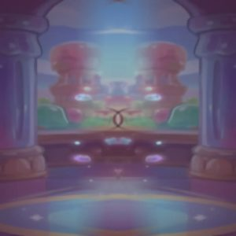
| Shape | data-part | 실루엣 규칙 | 크기 3종 (--wf-w) |
|---|---|---|---|
| 직사각 | modal | 접선 사각형 · R 0.070·w · h 1.140·w | 소 92px · 중 140px · 대 200px |
| 스타디움 | capsule | 양끝 반원 · R = h/2 · h 0.3797·w | 소 92px · 중 140px · 대 200px |
| 계단 | hud | 넓고 낮은 판 · h 0.1794·w · step 홈 | 소 92px · 중 140px · 대 200px |
| 원 | chip | L0 끔 + ellipse(50% 50%) · h 1.0085·w | 소 92px · 중 140px · 대 200px |